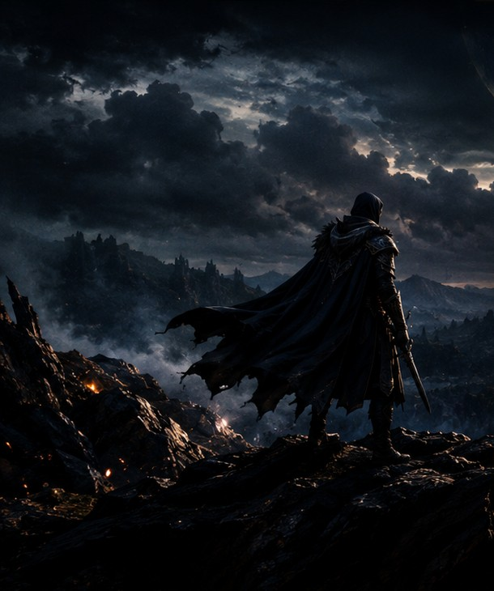

PLAYER XP
لاعب REIGN
EXPLORER
R
XP0 XP
0 / 1000ألعاب متتبعة
0hساعات مسجلة
0شارات مكتسبة
من أول مهمة إلى آخر زعيم؛ خطط واضحة، أسرار مخفية، وأدلة تساعدك على إتقان مغامرتك.

مكتبة ألعاب PS4 منظمة لتسهيل الاختيار والمقارنة. ابحث باسم اللعبة أو نوعها، ثم رتّب النتائج بحسب سنة الإصدار أو الوقت التقريبي لإنهائها، واحفظ المفضلة لتعود إليها لاحقًا. تقديرات الوقت إرشادية وقد تختلف باختلاف أسلوب اللعب.
جرّب كلمة أخرى أو أزل بعض الفلاتر.
أوقات اللعب تقديرية وليست ضمانًا؛ تختلف حسب مستوى الصعوبة وأسلوب اللعب. الصور تأتي من روابط صور الألعاب الخارجية، وقد تحتاج اتصالًا بالإنترنت وقد تتغير أو لا تتوفر لبعض العناوين. تحقق من توفر نسخة PS4 تحديدًا قبل الاعتماد على أي عنوان.
احسب المدة التقريبية التي تحتاجها لإنهاء لعبة بناءً على وقت لعبك اليومي.
الأوقات تقريبية مجمّعة من تقديرات شائعة للاعبين وليست بيانات رسمية؛ الألعاب التنافسية والمستمرة لا تملك نهاية ثابتة.
ملف لاعب يمكنك حفظه على هذا الجهاز أو ربطه بحساب Google لحفظ تقدمك ومزامنته بين أجهزتك.
اربط حساب Google لحفظ ملف اللاعب والتقدم والمفضلة والمجموعات في السحابة واستعادتها على جهاز آخر.
الخصوصية: يستخدم REIGN تسجيل Google عبر Firebase. لا تدخل كلمة مرور Gmail داخل الموقع؛ تظهر نافذة Google الرسمية. بيانات الألعاب الخاصة تُحفظ في حسابك ولا تكون عامة. يجب إعداد مشروع Firebase الخاص بك قبل تفعيل هذه الميزة.
افتح تفاصيل أي لعبة وحدد حالتها لتظهر هنا.
حدد نوع التجربة والوقت المتاح، وسيقترح REIGN ألعابًا من المكتبة تناسب اختياراتك.
ابدأ بخطة منظمة للإنجازات. لا نعرض عددًا أو صعوبة غير موثّقين؛ استخدم رابط البحث عن دليل خاص باللعبة للتحقق من المتطلبات.
اختر لعبة لمعرفة وقت الإكمال التقريبي، ثم افتح دليلًا متخصصًا للتأكد من التروفيات القابلة للفوات، ومستوى الصعوبة، ومتطلبات اللعب عبر الإنترنت.
أوقات الإكمال تقديرية من بيانات REIGN وليست وقت بلاتينيوم مؤكدًا.
قائمة التحقق تحفظ على هذا المتصفح. REIGN مستقل ولا يضمن دقة أدلة الجهات الخارجية.
مجموعات سريعة تساعدك على العثور على نوع التجربة التي تريدها.
رتبك وتحدياتك ومكتبتك الشخصية في مكان واحد. جميع البيانات محلية على هذا المتصفح.
EXPLORER
الاختيار يتغير حسب اليوم، وهو اقتراح تحريري وليس تقييمًا رسميًا.
أكمل المهام وسجّل تقدمك للحصول على شارات محلية.
صدّر ملفًا احتياطيًا للمفضلة والتقدم والملف الشخصي والمجموعات، أو استعده لاحقًا على هذا المتصفح.
REIGN ULTRA لا يتصل بحساب PlayStation ولا يقرأ التروفيات الفعلية من الجهاز. XP والساعات والشارات ميزات تنظيمية داخل الموقع فقط.
دفتر جلساتك، أهدافك، عجلة اختيار اللعبة، وإحصاءاتك الشخصية — محفوظة على جهازك.
احتَر أقل، والعب أكثر. اختر من قائمة «أريد لعبها» أو من المكتبة كلها.
حدد هدفًا واقعيًا لساعات اللعب هذا الشهر، وتابع تقدمك تلقائيًا من جلساتك المسجلة.
لم تسجّل جلسات بعد. ابدأ بجلسة اليوم!
خطط لقائمة ألعابك، انقل بياناتك بين أجهزتك، واستعرض عامك — كل ذلك محليًا على جهازك.
يرتّب ألعاب «ألعب الآن» و«أريد لعبها» ويحسب متى تنتهي منها حسب ساعاتك الأسبوعية.
يعتمد على جلسات PLAYROOM المسجّلة.
يجمع كل بياناتك (المفضلة، التقدم، الجلسات، التروفيات…) في رمز نصي واحد. انسخه والصقه على الجهاز الآخر. لا يُرسل شيء إلى أي خادم؛ احتفظ بالرمز لنفسك.
كل سلسلة بترتيب الإصدار مع تقدمك فيها. الترتيب حسب سنة الصدور وليس بالضرورة ترتيب القصة.
أضف لعبة وتاريخ صدورها لمتابعة العدّ التنازلي. التواريخ تكتبها أنت؛ الموقع لا يجلب أخبارًا ولا يرسل إشعارات.
رسوم بسيطة من جلساتك وحالات ألعابك، مع هدف سنوي لعدد الألعاب التي تنهيها.
من جلسات PLAYROOM المسجلة.
قيّم ألعابك من نافذة اللعبة وأضف وسومًا، ثم صفِّ وصنّف هنا.
0 لعبة مقيّمة
أنشئ قوائم (أفضل 10، ألعاب مع الأصدقاء…) وشاركها برمز نصي قصير يلصقه صديقك عنده.
اكتب بنود التروفيات التي تريد تحقيقها في أي لعبة وأشِّر عليها. هذه قوائمك أنت وليست بيانات رسمية من PlayStation.
اكتب ملاحظات تقدمك وأضف لقطات شاشة لكل لعبة. تُحفظ على جهازك فقط (IndexedDB) ولا تدخل في رمز النقل بسبب حجم الصور؛ استخدم تصدير الدفتر.
نزّل مكتبتك وتقييماتك كجدول CSV (يفتح في Excel)، أو اطبع قائمة نظيفة.
تفتح نافذة الطباعة في متصفحك؛ اختر «حفظ كـ PDF» إن أردت ملفًا.
أضف لعبة تنتظر خصمها مع السعر الذي تريده. الأسعار تكتبها وتحدّثها أنت؛ الموقع لا يجلب أسعارًا من المتاجر.
سجّل أصدقاءك وخطّط لجلسات لعب مشتركة، وتابع كم لعبتم معًا.
معلومات أساسية قبل التعديل أو تثبيت محتوى على جهازك.
تحقق من إصدار النظام، وتوافق النسخة، ومصدر الملفات. لا توجد طريقة واحدة تناسب كل أجهزة PS4؛ التفاصيل تتغير حسب إصدار النظام ونوع المحتوى.
خطوات سريعة لمعرفة رقم إصدار برنامج النظام.
المنطقة، التحديث، ورقم النسخة أمور مهمة.
النسخ الاحتياطي ومصادر الملفات الموثوقة.
تعرّف على Homebrew وGoldHEN وملفات التحديث.
مركز مساعدة داخل REIGN: خطط تقدم ونصائح وأهداف قابلة للحفظ، مع إرشادات عملية حسب نوع اللعبة.
اختر لعبة لعرض إرشاداتها وأهدافها داخل الموقع.
الأدلة هنا إرشادية وليست walkthrough رسميًا كاملًا لكل مهمة. تقدّمك يُحفظ محليًا على هذا المتصفح.
خطة عامة تساعدك على تنظيم التقدم دون حرق أحداث القصة.
مساحة عمل واحدة ترافقك من أول مهمة إلى آخر إنجاز: تتبّع المقتنيات، واستعد للمواجهات، وخطّط للوصول إلى 100%، وافهم تبعات القرارات، ونظّم المهام، واختر مستوى الصعوبة الذي يناسب خبرتك. اختر لعبة ثم انتقل بين الأدوات؛ تُحفظ علامات الإنجاز وملاحظاتك على هذا المتصفح.
المعلومات التفصيلية متاحة لعناوين محددة فقط، ومذكور مرجع التحقق داخل الأداة. الألعاب الأخرى تعرض تنبيهًا بدل اختلاق معلومات. الحفظ محلي ولا يقرأ ملفات الحفظ من جهاز PlayStation.
قارن عنوانين جنبًا إلى جنب من بيانات المكتبة، مع توضيح الفروق في الوقت والتصنيف وسنة الإصدار.
المقارنة مبنية على البيانات المسجلة في REIGN؛ لا تعني أن أحد العنوانين أفضل موضوعيًا، وقد تختلف تقديرات الوقت.
الألعاب التي تحفظها ستظهر هنا على هذا المتصفح.
اضغط على رمز القلب في أي بطاقة لحفظ اللعبة هنا.
إجابات سريعة عن المكتبة واستخدامها.
لا. REIGN مشروع مستقل وغير تابع لشركة Sony أو PlayStation، ولا يستخدم الموقع أي ادعاء بالصفة الرسمية.
تُحمّل بعض الأغلفة من صفحات متجر Steam المرتبطة بعنوان اللعبة، وليست بالضرورة غلاف PS4 الأصلي. لقطات الشاشة التي يعرضها الموقع قد تكون من إصدار PC للعنوان نفسه؛ تحقق من المصدر ورابط المنصة قبل الاعتماد عليها.
نعم. افتح script.js وأضف عنصرًا جديدًا إلى مصفوفة games مع الاسم والتصنيف والوصف وسنة الإصدار ورابط الصورة. راعِ استخدام صور تملك حق استخدامها.
نعم، تحفظ المفضلة محليًا في المتصفح باستخدام localStorage. قد تختفي إذا حذفت بيانات الموقع أو استخدمت متصفحًا أو جهازًا آخر.
لا يتضمن هذا القالب روابط تنزيل ألعاب محمية بحقوق النشر. يمكن استخدامه لعرض معلومات الألعاب وأدلة التوافق ومصادر قانونية أو محتوى تملك حق توزيعه.
مكتبة واحدة. عوالم كثيرة. اكتشف اللعبة التالية التي تستحق وقتك.
العودة إلى المكتبة ↙تحقّق من معلومات النسخة المحددة ومصدرها قبل التثبيت. لا يوفر REIGN ملفات ألعاب محمية بحقوق النشر.